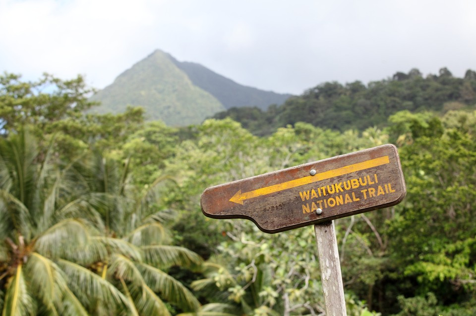

The Boiling Lake is located Boiling Lake Tourin the Morne Trois Pitons National Park in Dominica. It is the second-largest hot lake in the world and one of the most popular tourist attractions in Dominica. The Boiling Lake is so named because it is constantly bubbling and steaming due to the high temperatures of the water. The water in the lake is heated by lava from a nearby volcano. Hike level: Moderate to hard | Hike Duration: 6-8 Hours Round trip hiking
The Waitikubuli National Trail is the longest hiking trail in the Caribbean. It spans 115 miles (185 km) and runs the length of Dominica, from Soufriere in the South to Portsmouth in the north. This segment of the trail is considered to be moderate in difficulty and is perfect for those who are looking to get a taste of what the Waitikubuli National Trail has to offer. The scenery along this segment of the trail is absolutely stunning, and you will get to see a variety of different plant and animal life. If you are planning on hiking the Waitikubuli National Trail, make sure to start with Segment 1. This segment will give you a good idea of what to expect from the rest of the trail, and it will help you to gauge your fitness level. Hike level: Hard to Very Hard | Hike Duration: 14-16 Days hiking to Complete